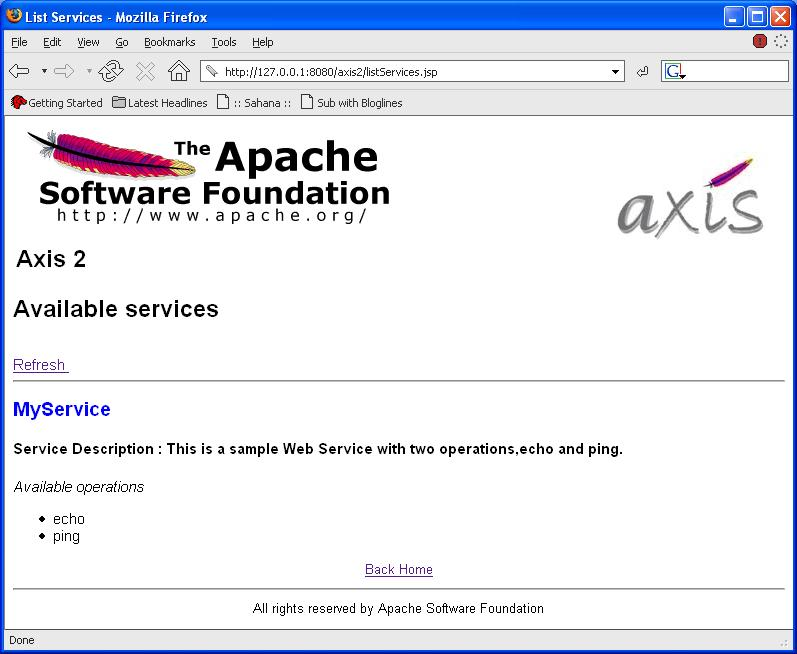

Welcome to Axis 2.0, the next generation of Apache Axis !!! This User Guide will help you to understand what you will get from Axis 2.0 and how to get started. We hope you will benefit from the power of Axis 2.0.
Before we start, its highly recommended to read Axis 1.x User's guide , if you are new to Axis.
Axis 2.0 is the next generation of Apache Axis. In late August 2004, during the Axis Summit held in Colombo, Sri Lanka, a new architecture was introduced to have a much more flexible, efficient and configurable Axis. Even though the architecture is new, some of the well established concepts from Axis 1.x, like handlers are preserved in Axis 2.0 also. Axis 2.0 comes with lots of new features, enhancements and new industry specification implementations.
After months of continued discussion and coding effort in this direction, Axis 2.0 now delivers the following key features:
We hope you enjoy using Axis. Please note that this is an open-source effort - if you feel the code could use some new features or fixes, please get involved and lend a hand! The Axis developer community welcomes your participation .
Let us know what you think!
Please send feedback about the package to " axis-user@ws.apache.org " and make sure to prefix the subject of the mail with [Axis2].
This release includes the following features:
The release include following tools
Please see a list of what we think needs doing - and please consider helping out if you're interested & able!
In this section of the user guide we will look at how to write and deploy Web Services and how to write Web Service Clients using Axis2. All the user guide samples are located at the "samples/userguide/src" directory of the binary distribution. So.. let's explore the samples.
Note: Please note that the rest of this user guide assumes that the user has downloaded the binary distribution of Axis2. If you have already downloaded the source tree of Axis2 then please create the binary distribution by simply using the maven command maven dist-bin This will create the "axis2-M2-bin.zip" and "axis2-M2-bin.tar" in the "target/dist" directory. Extract the zip or the tar ball to any directory in your machine and for the explanations purposes we will name this directory as "Axis2Home".
Before starting, please check whether you have deployed the "axis2.war" in your servlet container and it is working properly. (See Installation Guide)
First let's see how we can write a simple Web Service (MyService) and deploy it. For this purpose we will create a Web Service with two operations as follows.
public void ping(OMElement element){} //IN-ONLY operation, just accepts the OMElement and do some processing.
public OMElement echo(OMElement element){}//IN-OUT operation, accepts an OMElement and responds with another OMElement after processing.Complete code for this example Web Service (MyService) can be found in the "Axis2Home/samples/userguide/src" directory under "userguide/example1" package. As you can see, the two operations are very simple and need no explanations on what they are doing. So let's see how we can write the deployment descriptors for the service and deploy it.
Axis2 uses "service.xml" to keep configurations for a Web Service. Each Web Service deployed in Axis2 needs a "service.xml" containing the configurations. "service.xml" for MyService will be as follows; we will see what each parameter means later.
<service name="MyService">
<description>
This is a sample Web Service with two operations, echo and ping.
</description>
<parameter name="ServiceClass" locked="xsd:false">userguide.example1.MyService</parameter>
<operation name="echo">
<messageReceiver class="org.apache.axis.receivers.RawXMLINOutMessageRecevier"/>
</operation>
<operation name="ping">
<messageReceiver class="org.apache.axis.receivers.RawXMLINOnlyMessageRecevier"/>
</operation>
</service>
As it can be seen, first line of the "service.xml" gives the name of the Web Service. This is used in the URL to the service as the service name. Next comes the description and the service class. The next two xml tags describe the operations that are available in this service with respective message receivers. For the "echo" operation we have used a RawXMLINOutMessageRecevier since it is an IN-OUT operation. For IN-ONLY operation, "ping" we have used RawXMLINOnlyMessageRecevier as the message receiver.
Axis2 use ".aar" (Axis Archive) file as the deployment package for Web Services. So, for MyService we will use "MyService.aar" with the "service.xml" packaged in the META-INF as shown in the following picture.
To create "MyService.aar" user can first create a jar file containing all the files necessary for the service and then rename the "jar" to "aar" so that Axis2 understands it as a service archive. This has already been created in the "Axis2Home/samples/userguide" directory, and let's use it..
Deploying the service is just a matter of dropping the ".aar" in to "services" directory that can be found in the "\webapps\axis2\WEB-INF" of your servlet container and hence please copy the "MyService.aar" into the "services" directory. Once these steps are completed, please start the servlet container (if you have not already started) and check the link "List Available services" in the page http://localhost:8080/axis2/index.jsp and see whether the MyService is deployed properly. If everything is ok, you will see the following out put..

If you can see the above output then you have successfully deployed MyService on Axis2. Now let's see how we can write Web Service client to use this services. Axis2 provides an easy way to deploy a Web Services using, index.jsp. (See the installation guide for more information on this)
Web services can be used to provide wide range of functionality to the users ranging from simple less time consuming operations such as "getStockQuote" to time consuming business services. When we utilize (invoke using client applications) these Web Service we cannot use some simple generic invocation paradigm that suites all the timing complexities involved in the service operations. For example, if we use a single transport channel (such as HTTP) to invoke a Web Service with and IN-OUT operation, that take long time to complete, then in most of the time we may end up with "connection time outs". On the other hand, if there are simultaneous service invocations that we need to perform from a single client application, then the use of a "blocking" client API will degrade the performance of the client application. Similarly there are various other consequences such as One-Way transports that come in to play when we need to invoke Web Services. So let's try to analyze some common service invocation paradigms.
Many web service engines provide the users with a Blocking and Non-Blocking client APIs.
Both these mechanism works in the API level and let's name the asynchronous behavior that we can get using the Non-Blocking API as API Level Asynchrony.
Both these mechanisms use single transport connection to send the request and to receive the response. They severely lags the capability of using two transport connections for the request and the response (either One-Way of Two-Way). So both of these mechanisms fail to address the problem of long running transactions (the transport connection may times-out before the operation completes). A possible solution would be to use two separate transport connections for request and response. The asynchronous behavior that we gain using can be called, Transport Level Asynchrony.
By combining the two we can obtain four different invocation patterns for web services as shown in the following table.
| API (Blocking/Non-Blocking) | Dual Transports (Yes/No) | Description |
| Blocking | No | Simplest and the familiar invocation pattern |
| Non-Blocking | No | Using callbacks or polling |
| Blocking | Yes | This is useful when the service operation is IN-OUT in nature but the transport used is One-Way (e.g. SMTP) |
| Non-Blocking | Yes | This is can be used to gain the maximum asynchronous behavior. No blocking in the API level and also in the transport level |
Axis2 provides the user with all these possibilities to invoke Web Services and let's see how to use them Now!
Axis2 provides the user with several invocation patterns for Web Services, ranging from pure blocking single channel invocations to a non-blocking dual channel invocations. First let's see how we can write a client to invoke "echo" operation of "MyService" using the simplest good old blocking invocation. The client code that you need to write will be as follows.
try {
OMElement payload = ClientUtil.getEchoOMElement();
Call call = new Call();
call.setTo(targetEPR);
call.setTransportInfo(Constants.TRANSPORT_HTTP, Constants.TRANSPORT_HTTP, false);
OMElement result = (OMElement) call.invokeBlocking("echo", payload);
StringWriter writer = new StringWriter();
result.serializeWithCache(XMLOutputFactory.newInstance().createXMLStreamWriter(writer));
writer.flush();
System.out.println(writer.toString());
} catch (AxisFault axisFault) {
axisFault.printStackTrace();
} catch (XMLStreamException e) {
e.printStackTrace();
}
}
The green lines shows the set of operations that you need to perform in-order to invoke a web service while the rest is used to create the OMElement that needs to be sent and to display the response OMElement. To test this client you can use the provided ant build file that can be found in the "Axis2Home/samples" directory. Run the "testEchoBlockingClient" target . if you can see the response OMElement printed in your command line then you have successfully tested the client as well.
In the Web Service "MyService" we had a IN-ONLY operation with the name "ping" (see Web Services Using Axis2). So let's write a client to invoke this operation as well. The client code will be as follows.
try {
OMElement payload = ClientUtil.getPingOMElement();
MessageSender msgSender = new MessageSender();
msgSender.setTo(targetEPR);
msgSender.setSenderTransport(Constants.TRANSPORT_HTTP);
msgSender.send("ping", payload);
} catch (AxisFault axisFault) {
axisFault.printStackTrace();
}
Since we are accessing a IN-ONLY operation we can directly use the "MessageSender" to invoke this operation. As it can be seen in the above code , it is very straight forward to invoke this type of operation. MessageSender will not block the invocation, hence it will return the control immediately back to the client. You can test this client by running the target "testPingClient" of the ant build file at "Axis2Home/samples".
Ok, we have invoked the two operations in our service, Are we done? No!, there are lot more to explore, Let's see some other ways to invoke the same operations.
In the EchoBlockingClient once the "call.invokeBlocking("echo", payload);" is called, the client is blocked till the operation is completed. This behavior is not desirable when there are many Web Service invocations to be done in a single client application. A solution, would be to use a Non-Blocking API to invoke web services. Axis2 provides a callback based non-blocking API for users.
A sample client for this can be found under "Axis2Home/samples/userguide/src/userguide/clients" with the name EchoNonBlockingClient. If we consider the changes that the user may have to do with respect to the "EchoBlockingClient" that we have already seen, it will be as follows.
call.invokeNonBlocking("echo", payload, callback);The invocation accepts a callback object as a parameter. Axis2 client API provides an abstract Callback with the following methods.
public abstract void onComplete(AsyncResult result);
public abstract void reportError(Exception e);
public boolean isComplete() {}
The user is expected to implement the "onComplete " and "reportError " methods of their extended call back class. Axis2 engine calls the onComplete method once the Web Service response is received by the Axis2 Client API (Call). This will eliminate the blocking nature of the Web Service invocations and provides the user with the flexibility to use Non Blocking API for Web Service Clients.
To run the sample client ( EchoNonBlockingClient) you can simply use the "testEchoNonBlockingClient" target of the ant file found at the "Axis2Home/samples" directory.
The solution provided by the Non-Blocking API has one limitation when it comes to Web Service invocations which takes long time to complete. The limitation is due to the use of single transport connection to invoke the Web Service and to retrieve the response. In other words, client API provides a non blocking invocation mechanism for the users, but the request and the response comes in a single transport connection (needs two way transports like HTTP). Long running Web Service invocations or Web Service invocations using One-Way transports (like SMTP) cannot be utilized by simply using a non blocking invocation.
The trivial solution is to use separate transport connections (either One-Way or Two-Way) for the request and response. The next problem that needs to be solved is the correlation (correlating the request and the response). WS-Addressing provides a neat solution to above using <wsa:MessageID> and <wsa:RelatesTo> headers. Axis2 provides support for addressing based correlation mechanism and a complying Client API to invoke Web Services with two transport connections. (core of Axis2 does not depend on WS-Addressing, and it is the addressing like properties, hence Axis2 has the flexibility to use different versions of addressing)
Users can select between Blocking or Non-Blocking APIs for the Web Service clients with two transport connections. By simply using a boolean flag, the same API can be used to invoke web services (IN-OUT operations) using two separate transport connections. Let's see how we can do it using an example. Following code fragment shows how to invoke the same "echo" operation, using Non-Blocking API with two transport connections. The ultimate asynchrony!!
try {
OMElement payload = ClientUtil.getEchoOMElement();
Call call = new Call();
call.setTo(targetEPR);
//The boolean flag informs the axis2 engine to use two separate transport connection
//to retrieve the response.
call.engageModule(new QName(Constants.MODULE_ADDRESSING));
call.setTransportInfo(Constants.TRANSPORT_HTTP, Constants.TRANSPORT_HTTP, true);
//Callback to handle the response
Callback callback = new Callback() {
public void onComplete(AsyncResult result) {
try {
StringWriter writer = new StringWriter();
result.getResponseEnvelope().serializeWithCache(
XMLOutputFactory.newInstance().createXMLStreamWriter(writer));
writer.flush();
System.out.println(writer.toString());
} catch (XMLStreamException e) {
reportError(e);
}
}
public void reportError(Exception e) {
e.printStackTrace();
}
};
//Non-Blocking Invocation
call.invokeNonBlocking("echo", payload, callback);
//Wait till the callback receives the response.
while (!callback.isComplete()) {
Thread.sleep(1000);
} call.close();
} catch (AxisFault axisFault) {
axisFault.printStackTrace();
} catch (Exception ex) {
ex.printStackTrace();
}
The three changes that we need do to the EchoNonBlockingClient are shown in the "green" color. Since our correlation mechanism is based on addressing we need
to first "engage" the addressing module.
"call.engageModule(new
QName(Constants.MODULE_ADDRESSING));" informs the Axis2 engine to engage the
addressing module at the client side. The boolean flag (value true) in the "
call.setTransportInfo(...)" method informs the Axis2 engine to use
separate transport connections for request and response. Finally "call.close()"
informs the Axis2 engine to stop the client side listener started to retrieve
the response.
Before we run the sample client we need one more step to perform. As mentioned earlier Axis2 uses addressing based correlation mechanism and hence we need to "engage" addressing module in the server side as well. According to the Axis2 architecture addressing module is deployed in the "pre-dispatch" phase (See Architecture Guide for more details about phases) and hence "engaging" means simply adding module reference in the "server.xml" (NOT the "service.xml"). Please add the following line to the "server.xml" that you can find in the "/webapps/axis2/WEB-INF" directory in the servlet container.
<module ref="addressing"/>
Note: Please note that once you change the "server.xml" you need to restart the servlet container.
This will enable the addressing in the server side and now you can test the "TestEchoNonBlockingDualClient" using the "testEchoNonBlockingDualClient" target of the ant file found at "Axis2Home/samples" directory. If you can see the response OMElement printed in the client side, that means you have successfully tested the Non Blocking API with two transport channels at the client side.
This is again a two transport request/response client, but this time, we use a Blocking API in the client code. Sample code for this can be found in the "Axis2Home/samples/userguide/src/userguide/clients/" directory and the explanation is similar to the EchoNonBlockingDualClient, except that here we do not use a callback object to handle response. This is a very useful mechanism when the service invocation is IN-OUT in nature and the transports are One-Way (e.g. SMTP). For the sample client we use two HTTP connections for request and response. User can test this client using the "echoBlockingDualClient" target of the ant build file found in the "Axis2Home/samples" directory.
See Configuring Transports for use different transports.
Axis2 provides an extended support for modules (See Architecture Guide for more details about modules in axis2). Let's see how we can create a custom module and deploy it to the MyService that we have created earlier. Following steps shows the actions that needs to be performed to deploy a custom module for a given Web Service.
Let's write a simple logging module for our sample. This module contains one handler that just logs the message that is passed though it. Axis2 uses ."mar" (Module Archive) to deploy modules in Axis2. Following diagram shows the file structure inside that needs to be there in the ".mar" archive. Let's create all these and see how it works.

LoggingModule is the implementation class of the Axis2 module. Axis2 modules should implement the "org.apache.axis.modules.Module" interface with the following methods.
public void init(AxisConfiguration axisSystem) throws AxisFault;//Initialize the module public void shutdown(AxisConfiguration axisSystem) throws AxisFault;//End of module processing
These methods can be used to control the module initialization and the termination. With the input parameter AxisConfiguration, the user is provided with the complete configuration hierarchy and this can be used to fine tune the module behavior by the module writers. For the simple logging service, we can keep these methods blank in our implementation class.
A module in axis2 can contain, one or more handlers that perform various SOAP header processing at different phases. (See Architecture Guide for more information about phases). For the logging module we will write a handle with the following methods. "public void invoke(MessageContext ctx);" is the method that is called by the Axis2 engine when the control is passed to the handler. "public void revoke(MessageContext ctx);" is called when the handlers are revoked by the Axis2 engine.
public class LogHandler extends AbstractHandler implements Handler {
private Log log = LogFactory.getLog(getClass());
private QName name;
public QName getName() {
return name;
}
public void invoke(MessageContext msgContext) throws AxisFault {
log.info(msgContext.getEnvelope().toString());
}
public void revoke(MessageContext msgContext) {
log.info(msgContext.getEnvelope().toString());
}
public void setName(QName name) {
this.name = name;
}
}
"module.xml" contains the deployment configurations for a particular module. It contains details such as Implementation class of the module (in this example it is the "LoggingModule" class and the various handlers that will run in different phases. "module.xml" for the logging module will be as follows.
<module name="logging" class="userguide.loggingmodule.LoggingModule ">
<inflow>
<handler name="InFlowLogHandler" class="userguide.loggingmodule.LogHandler">
<order phase="loggingPhase" />
</handler>
</inflow>
<outflow>
<handler name="OutFlowLogHandler" class="userguide.loggingmodule.LogHandler">
<order phase="loggingPhase"/>
</handler>
</outflow>
<Outfaultflow>
<handler name="FaultOutFlowLogHandler" class="userguide.loggingmodule.LogHandler">
<order phase="loggingPhase"/>
</handler>
</Outfaultflow>
<INfaultflow>
<handler name="FaultInFlowLogHandler" class="userguide.loggingmodule.LogHandler">
<order phase="loggingPhase"/>
</handler>
</INfaultflow>
</module>
As it can be seen there are four phases defined in this "module.xml"
Following set of tags describe the name of the handler, handler class and the phase in which this handler going to run."InFlowLogHandler" is the name given for the particular instance of this handler. The property, class is the actual implementation class for this handler. Since we are writing logging handler, we can reuse the same handler in all these phases, however this may not be the same for all the modules. "<order phase="loggingPhase" />" describes the phase in which this handler runs.
<handler name="InFlowLogHandler" class="userguide.loggingmodule.LogHandler"> <order phase="loggingPhase" /> </handler>
In this handler the phase "loggingPhase" is defined by the module writer. It
is not a pre-defined handler phase and hence the module writer should introduce
it to the "server.xml" (NOT the service.xml) so that Axis2 engine knows where to
place the handler in different "flows" (
InFlow, OutFlow, etc...). Following xml lines shows the respective changes to
the "server.xml" in order for us to deploy this logging module in Axis2 engine.
This is an extract of the phase section of the "server.xml".
<!-- ================================================= --> <!-- Phases --> <!-- ================================================= --> <phaseOrder type="inflow"> <!-- System pre defined phases --> <phase name="TransportIn"/> <phase name="PreDispatch"/> <phase name="Dispatch"/> <phase name="PostDispatch"/> <!-- System pre defined phases --> <!-- After Postdispatch phase module author or or service author can add any phase he want --> <phase name="loggingPhase"/> </phaseOrder> <phaseOrder type="outflow"> <!-- user can add his own phases to this area --> <phase name="loggingPhase"/> </phaseOrder> <phaseOrder type="INfaultflow"> <!-- user can add his own phases to this area --> <phase name="loggingPhase"/> </phaseOrder> <phaseOrder type="Outfaultflow"> <!-- user can add his own phases to this area --> <phase name="loggingPhase"/> </phaseOrder>
Shown in green, the custom phase "loggingPhase" is placed in all the flows, and hence that phase will be called in all the message flows in the engine. Since our module is associated with this phase, the LogHandler is now have a phase for it to get executed.
Up to this point we have created the required classes and the configuration descriptions for the logging module and by changing the "server.xml" we have created the required phases for the logging module. Now the next step is to "engage" (use) this module in one of our services. For this, let's use the same Web Service that we have used throughout the user guide, the MyService. However, since we need to modify the "service.xml" of the MyService in order for us engage this module, we use a separate Web Service, but with the similar operations. The code for this service can be found in the "Axis2Home/samples/userguide/src/userguide/example2" directory. The simple changes that we have done to he "service.xml' are shown in the green color in the following lines of xml.
<service name="MyServiceWithModule"> <description> This is a sample Web Service with a logging module engaged. </description> <module ref="logging"/> <parameter name="ServiceClass" locked="xsd:false">userguide.example2.MyService</parameter> <operation name="echo"> <messageReceiver class="org.apache.axis.receivers.RawXMLINOutMessageRecevier"/> </operation> <operation name="ping"> <messageReceiver class="org.apache.axis.receivers.RawXMLINOutMessageRecevier"/> </operation> </service>
In this example we have changed the service name (the implementatoin class is very similar to what we have used ealier although it is in a different package). In addition we have added the line "<module ref="logging"/>" to the "service.xml". This informs the Axis2 engine that the module "logging" should be engaged for this service. The handler in side the module will be executed in their respective phases as described by the "module.xml".
Step6 : Packaging
Before deploying the module we need to create the ".mar" file for this module. This can be done, using the "jar" command and then renaming the created jar file, or you can find the "Logging.mar" that is already created for you in the "Axis2Home/samples/userguide" directory.
Deploying a module in Axis2 require the user to create a directory with the name "modules" in the "webapps/axis2/WEB-INF" directory of their servlet container and then copying the ".mar" file to that directory. So let's first create the "modules" directory and drop the "LoggingModule.mar" in to this directory.
Although the required changes to the "service.xml" is very little, we have created a separate service archive (MyServiceWithModule.aar) for users to just deploy and see. Please deploy this service using the same steps that you use to deploy "MyService" and copy the "LoggingModule.mar" file to the "modules" directory. Then by using the "TestWebServiceWithModuleClient.bat" and "TestWebServiceWithModuleClient.sh" in the "Axis2Home/samples/userguide/src/userguide/clients/bin" directory.
Note: To see the logs, the user needs to modify the "log4j.properties" to log INFO as well. The property file is located in "webapps\axis2\WEB-INF\classes" of your servlet container. Change the line "log4j.rootCategory= ERROR, LOGFILE" to "log4j.rootCategory=INFO, ERROR, LOGFILE".
To show the power and usage of Axis2, three standard samples are shipped with the binary distribution. These are meant to interact with outside web services and prove the capabilities of the Axis2 system.
The included samples are
Following is a simple introduction to each of the samples. Each sample contains it's own help document that says about the usage and the advanced operations of that particular sample.
This includes a spell checker program that uses the Google spell checking service. It demonstrates the blocking and non-blocking modes of calling the service. This sample can be found at the samples\googleSpellcheck folder and can be easily started using either the batch file or the shell script.
Amazon queuing service sample shows how to use the Amazon queuing service. it has two user interfaces , one to enqueue and the other dequeue. This sample is included in the samples\amazonQS and also contains the batch/shell scripts to run.
The most obvious place to look for the samples are the binary distribution. all these samples are included in the samples directory in the binary distribution. The shell scripts and the batch files are in fact written to use the binary distributions root directory as the home to find the libraries.
The other way is to build the samples from source. Moving to the modules/samples and running maven will create the samples in the target/samples directory. However if the samples need to be started using the shell scripts (or the batch files) then the AXIS_HOME environment need to be set.( the "guessed" AXIS_HOME would not be correct in this case)
Axis2 is shipped with two standard tools. Both the tools are Eclipse plug-ins, the Codegen tool even has the accompanying Ant task and the command line tool.
Documentation for the code generator tool is available for the Codegen wizard and the Service Archiver.
The HTTP is configured by default, the server can be started by following
Java org.apache.axis.transport.http.SimpleHTTPServer repository port
The TCP transport is configured by default
Mail transport has two parts, transport Sender and transport Listener.
First you need following additional jar dependencies in the classpath, they can be found by downloading the JavaMail APIYou need a mail account in a SMTP server, and Mail transport sender can be activated by adding following entry to the server.xml file or client.xml file or in both.
<transportSender name="mail" class="org.apache.axis.transport.mail.MailTransportSender">
<parameter name="transport.mail.smtp.host" locked="xsd:false">smtp server host</parameter>
<parameter name="transport.mail.smtp.user" locked="xsd:false">user name</parameter>
<parameter name="transport.mail.smtp.password" locked="xsd:false">password</parameter>
<parameter name="transport.mail.smtp.port" locked="xsd:false">25</parameter>
</transportSender>
You need a mail address that has pop access, the mail Listener can be activated by adding following entry to the server.xml file or client.xml file or in both.
<transportReceiver name="mail" class="org.apache.axis.transport.mail.SimpleMailListener">
<parameter name="transport.mail.pop3.host" locked="xsd:false">pop server host</parameter>
<parameter name="transport.mail.pop3.user" locked="xsd:false">user name</parameter>
<parameter name="transport.mail.pop3.password" locked="xsd:false">password</parameter>
<parameter name="transport.mail.pop3.port" locked="xsd:false">110</parameter>
<parameter name="transport.mail.replyToAddress" locked="xsd:false">email address</parameter>
</transportReceiver>
At the Client side if the Mail Listener is needed it is automatically started by Axis2. If the Mail Listener is need to be started as the server it can be done with following command with the all the axis2 jars and the mail dependency jars in the classpath.
Java org.apache.axis.transport.mail.SimpleMailListener repository-directory
Download the Apache James and start the James, connect to the James via telnet for administrator James with following code
$telnet 127.0.0.1 4555
Trying 127.0.0.1...
Connected to localhost.localdomain (127.0.0.1).
Escape character is '^]'.
JAMES Remote Administration Tool 2.2.0
Please enter your login and password
Login id:
root
Password:
root
Welcome root. HELP for a list of commands
add users to the James
adduser axis2-server axis2
User axis2-server added
adduser axis2-client axis2
User axis2-client added
Connection closed by foreign host.
Now the James is up and running with the accounts